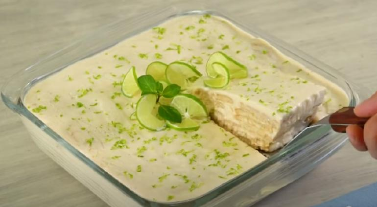

Carlota de Limon

Lista de ingredientes:
- 1 lata de leche condensada LA LECHERA
- 1 lata de leche evaporada CARNATION CLAVEL
- 1/4 taza de jugo de limon
- 30 galletas marias
- 1 limon cortado en rodajas
- 5 galletas marias troceadas
- 1 rama de menta desinfectada
- 1 limon su ralladura
Proceso:
-LICUA:Licua la leche condensada con la leche evaporada. Y sin dejar de licuar, agrega un poco de jugo de limon.
-AGREGA:En un refractario cuadrado, coloca una capa de galletas, un poco de la mezcla de limon y repite hasta terminar con el resto de los ingredientes.Cubre con plastico adherente y refrigera por 1 hora o hasta que este firme.
-DECORA:Decora con las rodajas de limon, las galletas troceadas, las hojas de menta y la ralladura de limon.

Alumn@:SOLIS CASTELLON INGRID DANEYRA Grupo:4BPM
Materia: Desarrollo de Aplicaciones Web Fecha:12/FEB/2024